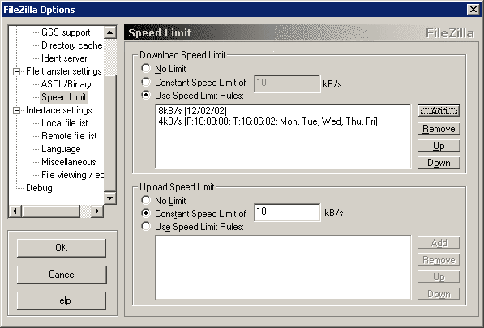
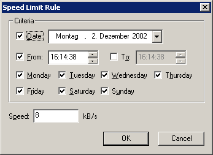

Speed Limit settings
Overview:
Sometimes it is not desired to transfer files with the maximum speed possible. In this case you can set up speed limits on this page.

The speed limits are divided into 2 categories: Download Speed Limit and Upload Speed Limit. This way you can configure the speed limits individually for upload and downloads.
You can either set up a Constant Speed Limit, or you can create a set of Speed Limit Rules.

For each rule you can specify the day of the week and/or the time the rule should be active. When processing the rules during a transfer, the speed limit is set by the first active rule in the list.